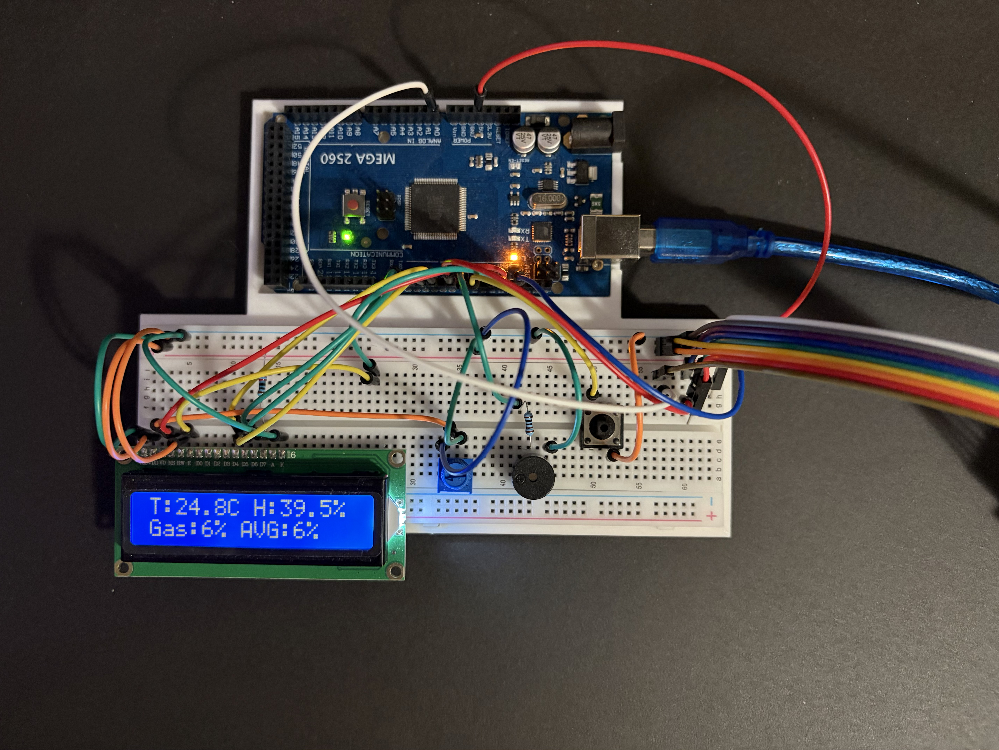
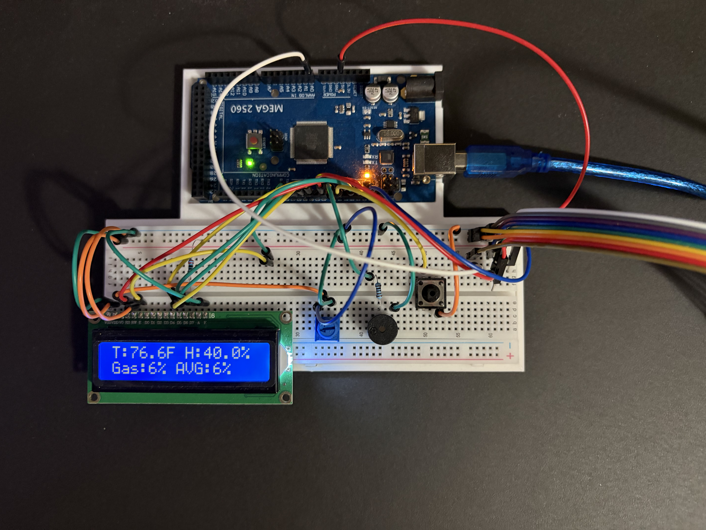
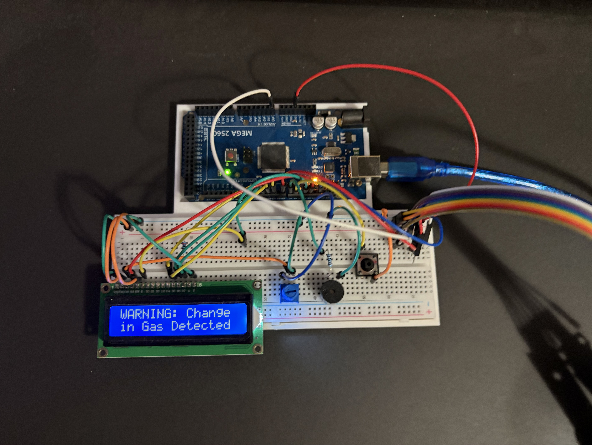
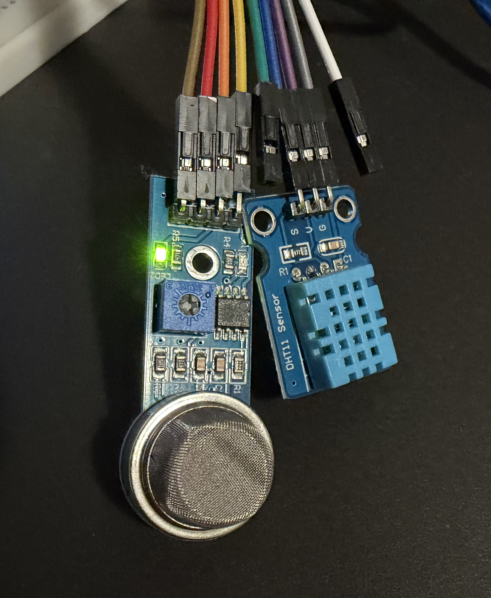

Project
Temperature, Humidity, and Gas Sensor Display
This page details the specifications and process of designing this temperature, humidity, and gas monitoring system.




Project
This page details the specifications and process of designing this temperature, humidity, and gas monitoring system.




Designed and implemented a Temperature, Humidity, and Gas monitoring system.
This circuit design serves as sensor display and alarm system which actively monitors temperature, humidity, and approximate gas levels in the air around the system. The DHT11 sensor is used to monitor temperatue and humidity, and the MQ-2 Sensor is used to monitor the gas levels. The DHT11 sensor measures temperature with a small thermistor which changes its resistance in response to temperature fluctuations, humidity is measured with a capacitive humidity sensor by measuring the resistance between two electrodes on a moisture-holding substrate; as humidity increases, conductivity increases, and resistance decreases. The MQ2 sensor measures the approximate gas levels in the air with an analog system referred to as a metal oxide semiconductor chemiresistor, detecting gas concentrations in the air by measuring sensitive changes in resistance. A push-button is installed on the breadboard allowing the user to switch between Celsius and Fahrenheit readings.